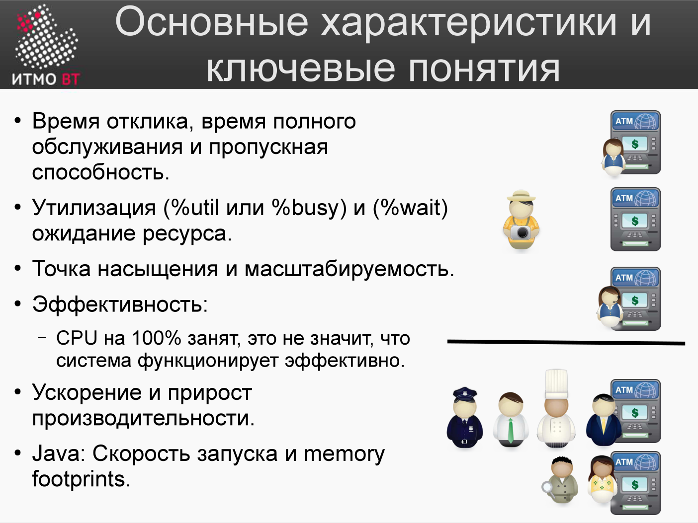
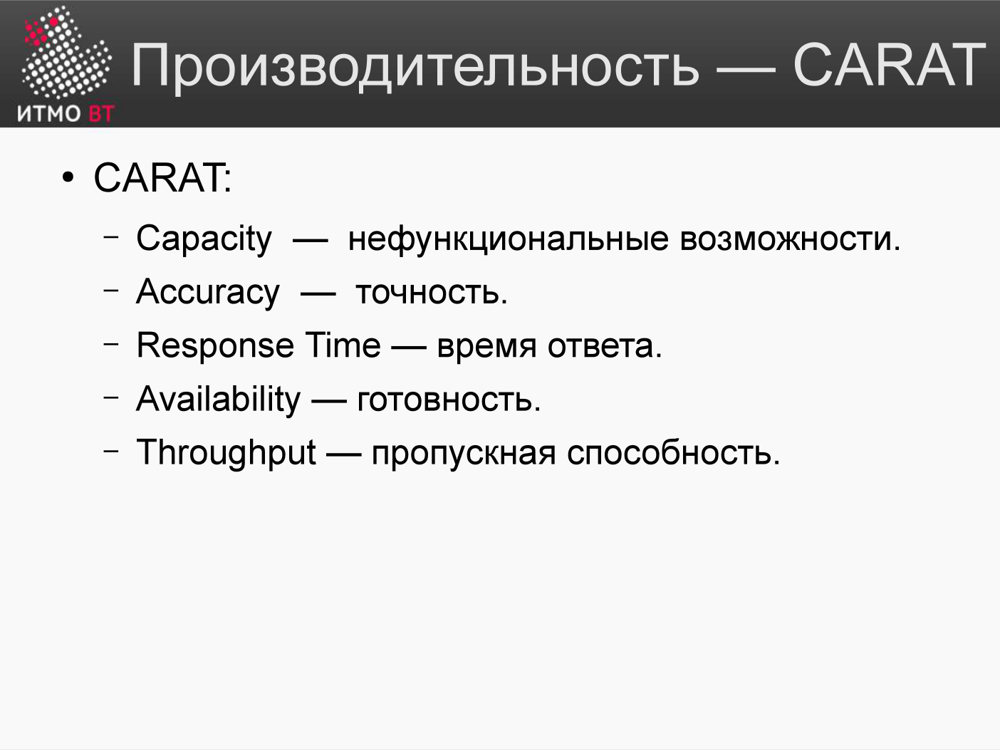

Билет 66. Ключевые характеристики производительности¶
Ответ¶
Ключевые понятия (по лекции)¶

| Характеристика | Что показывает |
|---|---|
| Время отклика (latency) | Время от выдачи запроса до получения первых результатов (у банкомата — от ввода карты до первой порции денег) |
| Время полного обслуживания | Время до получения полного результата (вся запрошенная сумма) |
| Пропускная способность (throughput) | Максимальное число запросов за единицу времени через канал, систему или её узел |
| Утилизация (%util / %busy) | Доля времени, когда ресурс занят полезной работой (банкомат занят 9 из 10 минут → утилизация 90%) |
| Ожидание ресурса (%wait) | Доля времени, когда очередь к ресурсу не пуста (учитывает среднюю длину очереди) |
| Точка насыщения | Момент, когда нагрузка достигает предела и система не может обработать больше. После неё производительность падает (резко — компоненты несбалансированы; плавно — сбалансированы) |
| Масштабируемость | Насколько можно количественно расширить и нагрузить систему |
| Эффективность | Отношение полезной работы к общему объёму работы. CPU на 100% занят ≠ система работает эффективно (например, своп тратит CPU и диск впустую) |
| Ускорение и прирост производительности | Насколько больше полезной работы выполняет программа после внесения изменений |
| Memory footprints (Java) | Стратегии использования памяти и скорость запуска; при некорректной работе с памятью скорость резко падает |
Математически точные определения этих параметров даёт теория массового обслуживания.
CARAT — мнемоника характеристик¶

Лекция сводит ключевые характеристики производительности в аббревиатуру CARAT:
- Capacity — ёмкость (нефункциональные возможности);
- Accuracy — точность;
- Response time — время ответа;
- Availability — готовность;
- Throughput — пропускная способность.
Ниже — как эти характеристики проявляются на уровне конкретных ресурсов: CPU, память, I/O, сеть.
CPU¶
%user — время выполнения кода приложения
%sys — время выполнения кода ядра (системные вызовы)
%iowait — CPU простаивает, ожидая завершения I/O
%idle — CPU не занят (нет работы)
Итого: %user + %sys + %iowait + %idle = 100%
Диагностика по значению: - Высокий %user → узкое место в коде приложения. - Высокий %sys → много системных вызовов (I/O, сеть, межпроцессное взаимодействие). - Высокий %iowait → ожидание диска или сети. - Высокий %idle → система недогружена или заблокирована на внешнем ресурсе.
Память¶
| Метрика | Что показывает |
|---|---|
| Физическая RAM (used/free) | Сколько реальной памяти занято |
| Swap used | Сколько данных вытеснено на диск |
| Page faults (minor) | Страница в памяти, но не в кэше процесса |
| Page faults (major) | Страница загружена с диска — медленно |
| Cache/Buffers | Память, используемая под кэш файловой системы |
Высокий swap → система использует диск как RAM → резкое замедление.
Диск (I/O)¶
| Метрика | Что показывает |
|---|---|
| IOPS | Число операций ввода-вывода в секунду |
| Throughput (МБ/с) | Объём данных в секунду |
| Latency (мс) | Время одной операции |
| %util | Доля времени, когда устройство занято |
| await | Среднее время ожидания I/O-запроса |
HDD: ~100–200 IOPS. SSD: 10 000–500 000 IOPS. NVMe: 1 000 000+ IOPS.
Сеть¶
| Метрика | Что показывает |
|---|---|
| Bandwidth (Мбит/с) | Пропускная способность канала |
| Packets/sec | Число пакетов в секунду |
| Errors/Dropped | Потерянные пакеты |
| Latency (ping) | Задержка туда-обратно |
| Connections | Число открытых TCP-соединений |
Load Average¶
load average: 1.5, 2.3, 1.8
↑ ↑ ↑
1 мин 5 мин 15 мин
Показывает среднее число задач, ожидающих выполнения. На N-ядерной системе значение ≤ N означает, что CPU справляется.
Подробно¶
Как читать top / htop¶
top - 14:32:01 up 5 days, load average: 0.85, 0.92, 0.88
Tasks: 210 total, 1 running, 209 sleeping
%Cpu(s): 25.0 us, 5.0 sy, 0.0 ni, 68.0 id, 2.0 wa, 0.0 hi
MiB Mem : 15892.3 total, 1023.4 free, 8234.1 used, 6634.8 buff/cache
MiB Swap: 2048.0 total, 1800.0 free, 248.0 used.
us= %user,sy= %sys,id= %idle,wa= %iowait.buff/cache— это не занятая память: ядро отдаст её приложениям при необходимости.- Swap used 248 МБ: сигнал, что памяти не хватает — часть данных на диске.
Перцентили latency — правильная метрика¶
Среднее время ответа скрывает «хвосты». Стандартная практика: - P50 (медиана) — типичный пользователь. - P95 — медленный пользователь. - P99 — очень медленный запрос. - P99.9 (three nines) — единицы из тысяч.
SLA обычно формулируется как P95 или P99: «99% запросов обрабатываются за < 200 мс».
Закон Литтла (Little's Law)¶
где: - \(L\) — среднее число запросов в системе, - \(\lambda\) — пропускная способность (запросов/сек), - \(W\) — среднее время обработки запроса.
Если нужно обработать 100 RPS, и каждый запрос занимает 0.5 с, то в системе одновременно находится 50 запросов. Это количество нужных worker-потоков.